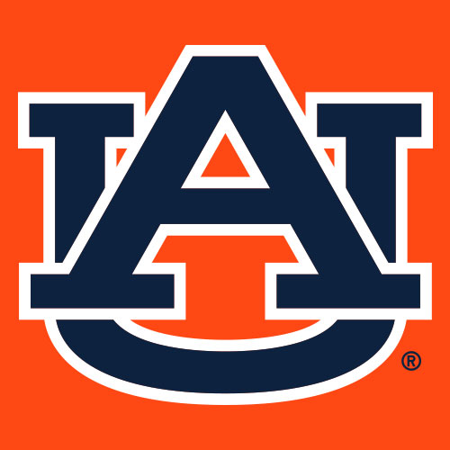
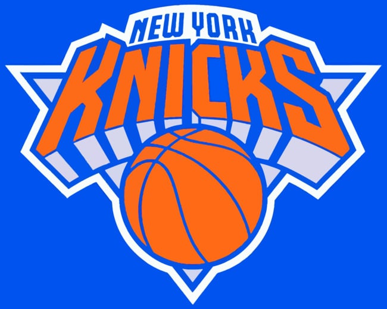
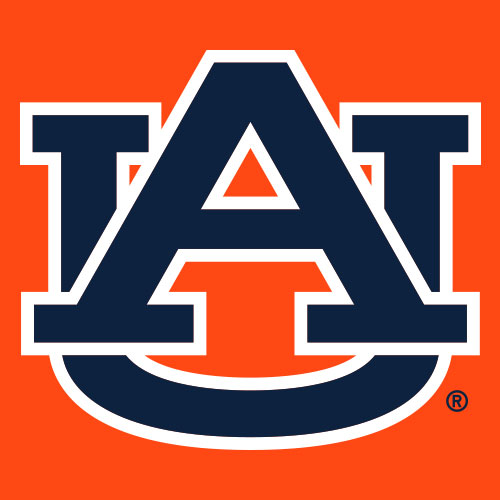
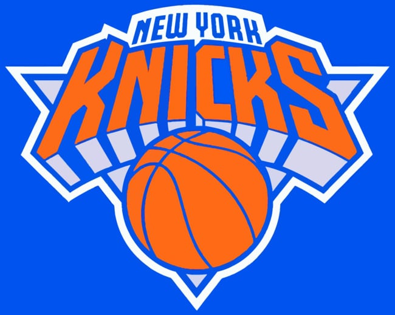

"This is not for everyone" - Coach Kalkat
Resume
2030
PTC Academy
Player Development Coach
Helped players transition from recreational to competitive.
Emphasized IQ and spacing.
2031
Junior Bisons
U17 & College Team
Started with U17 and was promoted to the college coaching staff.
Focused on maturity, defense, and team systems.
2032
Team Toba
Assistant Coach – Canada Games
Worked with top Manitoba talent. Contributed to system planning
and scouting.
2034
UPlay Canada EYBL U17
Assistant Coach
Joined one of Canada's top AAU programs. Qualified for Peach Jam
and competed nationally.
2035
Sea Bears
CEBL Player Development Consultant
Helped bridge younger Canadian players into the professional
circuit.
2036 UCLA
Graduate Assistant
Focused on film scouting and guard development in a high-tempo
system.
2038 Auburn
Assistant Coach – Recruiting
Joined Bruce Pearl’s staff. Helped land a top-20 recruiting class.
2039
University of Florida
Associate Coach
Led defensive strategy and backcourt development.
2042
New York Knicks
Assistant Coach
Joined Charen Gambir’s staff to rebuild team identity and player
culture.
2044 Retired
Committed to giving back and developing the next generation of
talent.
 



Coaching Style
I coach with pace. We push the ball in transition and don’t waste time. On defense, if you’re not playing hard, you're running 20 manmakers. Offensively, it’s about putting the ball in the hoop whether it’s a three, a mid-range jumper or a layup. Whatever gets it done.